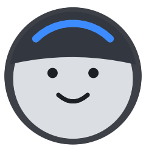
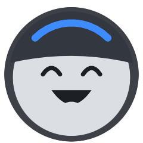
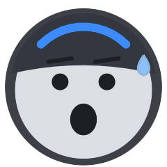
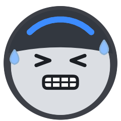

Indoor cycling.
No subscription.
A free, open-source Mac app for your smart trainer. Shift with your Zwift Click, test your FTP and ride structured workouts with ERG. Everything stays on your Mac.

The tools you need. Nothing else.
Built for the Wahoo KICKR CORE 2 with Zwift Click, and most Bluetooth FTMS trainers.
Click shifting
Zwift Click, Play and Ride work without the Zwift app. On Zwift-Cog trainers the firmware shifts, just like in Zwift.
Effort at a glance
A rider that pedals at your cadence, with four expressions for four effort levels. Use your own photos if you like.
FTP test & zones
A proper ramp test: 10 minute warm-up, +20 W per minute, you decide when to stop. Zones are set for you.
Workout library
20, 30, 45, 60 or 120 minutes. Recovery to sprints, ERG mode, cadence hints and 3-2-1 beeps. Import free .zwo files too.
Mini mode
A tiny floating window with your numbers, on top of Netflix even in full screen.
Ride log & Strava
Rate each ride, get a summary image with your stats, an FTP suggestion when you got stronger, and optional Strava upload.

Train, don't fiddle
In ERG mode your trainer holds the target watts. You just pedal, PedalCraft tells you when to speed up your cadence and beeps before every change.

easy
good
hard
maxed outInstall in a minute
PedalCraft is not notarized by Apple (that costs a yearly fee), so macOS asks once.
- Download PedalCraft.zip and double-click it.
- In the new folder, double-click Install.command.
- macOS blocks it the first time: click Done, open System Settings → Privacy & Security and click Open Anyway.
- Allow Bluetooth. Done. Updates install from inside the app.
FAQ
Do I need a Zwift account?
No. PedalCraft talks to your trainer and shifters directly over Bluetooth.
My Click v2 «−» stops working after a minute
Zwift locks the left puck unless you rode in Zwift recently. PedalCraft restarts it every 50 seconds, so «easier» may pause for a second now and then. The right puck is never locked.
Which trainers work?
It is built for the KICKR CORE 2. Trainers with Zwift virtual shifting get firmware shifting, other Bluetooth FTMS trainers get grade-based gears and ERG workouts.
What about my data?
Everything stays on your Mac. No account, no tracking, no server. Strava upload is optional and uses your own Strava keys.